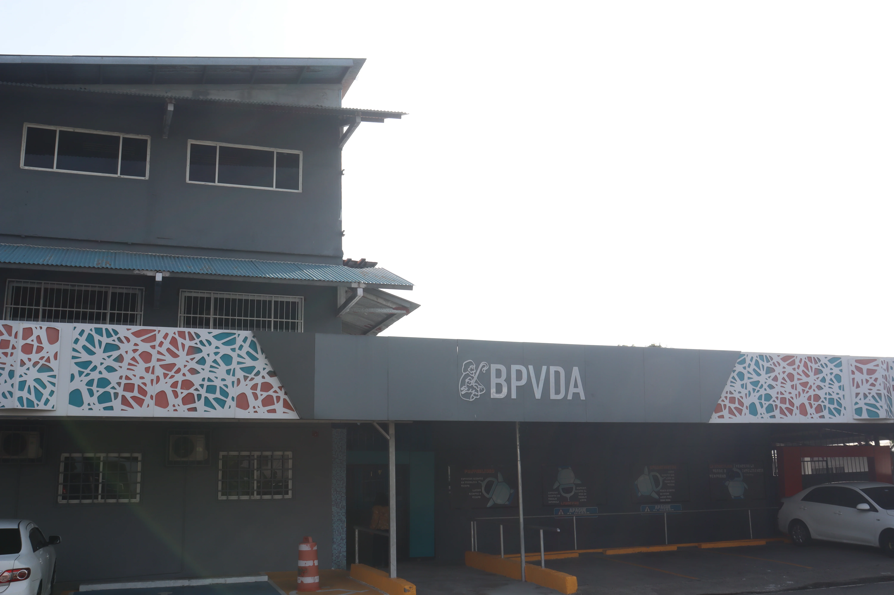

Estamos aquí para orientar a tu familia.
Acércate a conversar con nuestro equipo, programa una visita guiada para conocer las instalaciones y resuelve cualquier duda sobre admisiones, trámites de secretaría o vida escolar en el Colegio Buen Pastor Voz de Alerta.
Solicitar Visita Guiada o Consulta
Completa los siguientes campos y nuestro equipo de admisiones y orientación se comunicará contigo en menos de 24 horas hábiles.
Horarios de Atención Presencial
Nuestras ventanillas de secretaría y caja están disponibles de forma continua para atender trámites familiares:
- Año Lectivo Regular: 7:30 a.m. – 2:00 p.m.
- Período de Verano: 8:00 a.m. – 2:00 p.m.
- Días de Atención: Lunes a Viernes
- Fines de Semana: Cerrado (Citas especiales previas)
Cómo Llegar a la Sede
Estamos ubicados en Calle San José, Urbanización Monterrico, Corregimiento 24 de Diciembre, Ciudad de Panamá.
- 🚇 En Metro (Línea 2): Bájate en la Estación 24 de Diciembre. Desde allí puedes tomar transporte interno o taxi hacia Monterrico (aproximadamente 5 minutos).
- 🚌 En Transporte Público: Rutas de Vía España, Tumba Muerto o Corredor Sur con destino a 24 de Diciembre / Pacora, con parada cercana a la entrada de Monterrico.
- 🚗 En Vehículo Particular: Acceso fluido desde la Carretera Panamericana por la entrada principal de Monterrico. Contamos con estacionamiento interno para visitantes.
Normas de Ingreso al Plantel
Por la seguridad y el bienestar de los estudiantes, todo visitante debe registrarse en la garita principal presentando su documento de identidad personal (cédula o pasaporte). Agradecemos acudir con vestimenta adecuada acorde al entorno escolar.
Preguntas frecuentes sobre visitas y atención
Todo lo que necesitas saber antes de acercarte a las instalaciones de nuestro colegio.
¿Es indispensable coordinar una cita previa para conocer el campus?
Para trámites administrativos de ventanilla (pagos en caja, entrega de documentos o solicitud de constancias) no se requiere cita previa dentro de nuestro horario regular. Sin embargo, para realizar un recorrido guiado por las instalaciones o sostener una entrevista con directores de nivel, recomendamos programarla con al menos 24 horas de antelación para asegurar que un orientador esté disponible para atenderte con dedicación.
¿Qué áreas del colegio se pueden conocer durante la visita guiada?
Durante el recorrido podrás conocer los pabellones académicos, las aulas interactivas del nivel correspondiente a tu hijo, los laboratorios de ciencias y robótica, la capilla y auditorio central, la biblioteca, el comedor escolar y el complejo multideportivo techado.
¿Qué documentación debo traer si solicito información para traslado de otro colegio?
Es conveniente presentar una copia del último boletín de calificaciones o créditos oficiales del estudiante, así como la copia de la cédula juvenil del alumno y la cédula del acudiente. Con estos documentos, nuestro equipo pedagógico podrá brindarte una orientación precisa sobre el plan de convalidación y cupos disponibles.
¿Cómo consulto el estatus de un trámite o solicitud de admisión ya enviada?
Puedes consultar el estado de tu expediente directamente a través de nuestro WhatsApp institucional 6744-1351 o comunicándote al PBX 391-5811 indicando el nombre completo del estudiante y el nivel académico solicitado.
Sede Central BPVDA en Google Maps
Calle San José, Urbanización Monterrico, Corregimiento 24 de Diciembre, Ciudad de Panamá